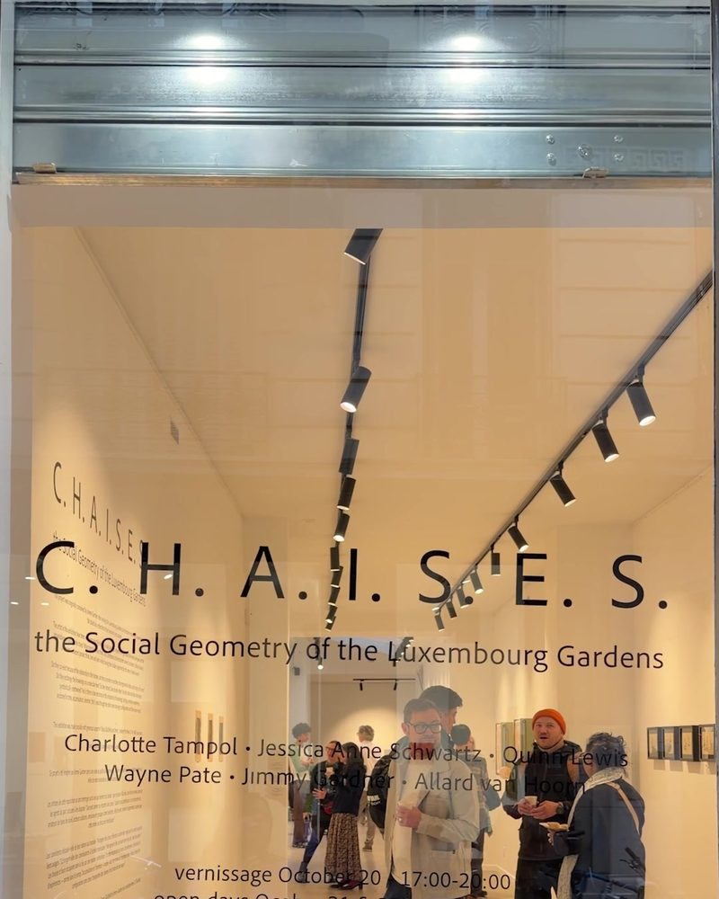
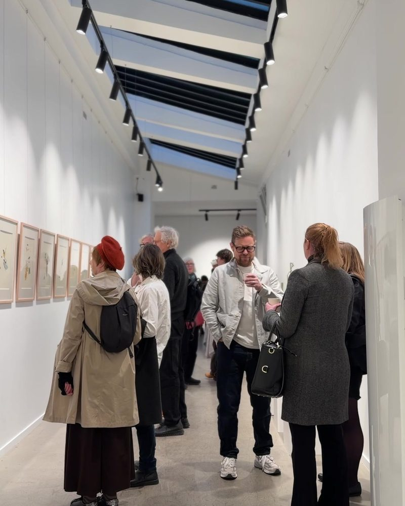
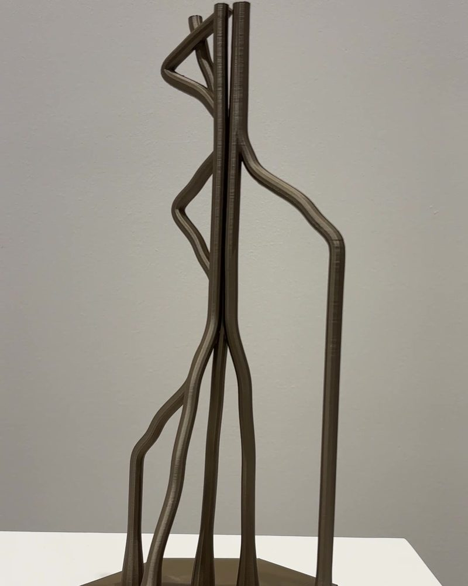
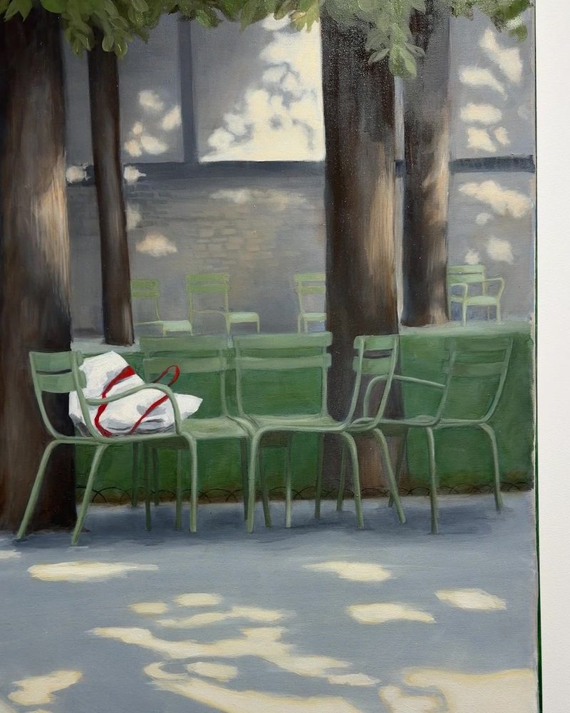
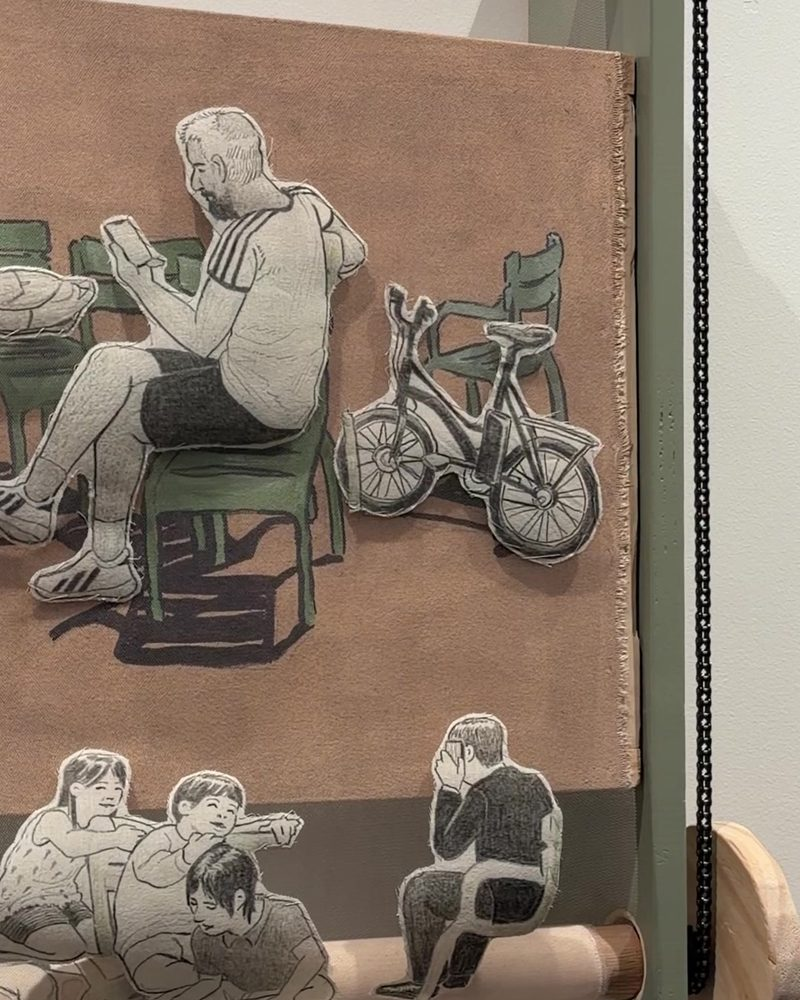
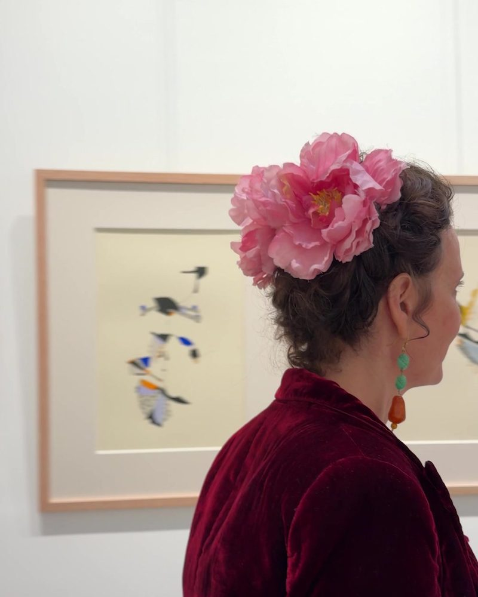
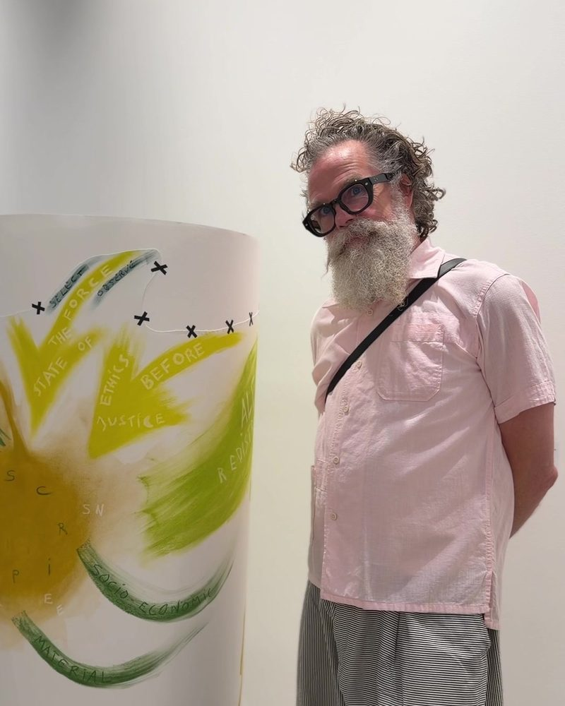
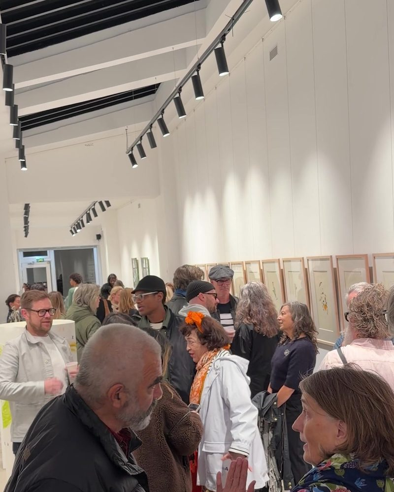

Project & Exhibition · Paris, October 2026
The Social Geometry of the Luxembourg Gardens
Every morning a gardener in the Jardin du Luxembourg resets the green metal chairs into a neutral grid. Over the day, Paris redraws them: two chairs that draw close and then drift apart, a single chair tracking the sun, a reader keeping an arm’s length of distance. Nobody directs this choreography. Almost nobody sees it.
C.H.A.I.S.E.S. put it in a room. Four scenarios observed in the garden over a year — the sun-worshipper, the lovers’ spat, the reader, the gathering — were translated by six artists into sculpture, painting, drawing, kinetic scrolls, a sound performance played on a Sénat chair borrowed from the garden, and an installation at 24 rue Chapon in the Marais, on the eve of Art Basel Paris.
Before the doors opened, 3D-printed chaises were let loose around the city; each one found puts a pin on a public map. The project was conceived by Jimmy Gardner and commissioned and produced by the foundation.
Opening night, 20 October 2026. Film by Charlotte Van de Walle, 2 min 57 s. Full screen ↗








Stills from the film by Charlotte Van de Walle.